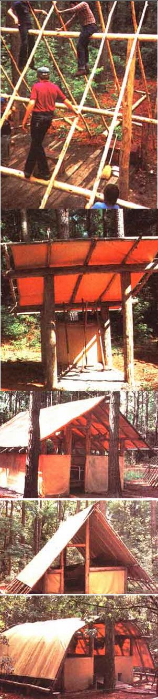

DAVE BROCK
(Top to bottom)1. Young campers and their instructor work at putting together an A-frame. 2. A modified Baker-style shelter makes a good pine pole toolshed (note the gravel floor, which provides drainage and keeps the area tidy). 3. A completed A -frame awaits its new occupants. Here the tarp walls have been stretched inside the supporting posts. 4. A sturdy and rather elegant Hogan sports rope-tied fencing and a wooden ramp up to its raised platform floor. 5. A Forester butts its top-cat and ridgepole against a handy tree.